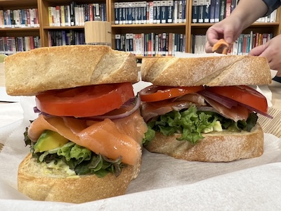

Nov 62023
No. 001/ 前導 / 未知 / 預視
Prelude / Unknown / Prevision
一切開始之前，先有一個呼吸的空間。在門開啟前一切未知，預視在另一個維度空間裡才得以出現。
Where Mercury met Mars — and Planet 66 was born.
A shared table across the stars, where every dish carries love.
Prelude / Unknown / Prevision
一切開始之前，先有一個呼吸的空間。在門開啟前一切未知，預視在另一個維度空間裡才得以出現。
Baked Tomato Beef Curry — Winter Solstice
冬至的焗烤，起司融化成金黃，像給這個節氣蓋了一床被子。
Ingredients
Italian-Style Roasted Chicken Leg with Vegetables
雞腿和烤蔬菜們一起進烤箱，出爐的時候，彼此有了對方的味道，變成新的一家人。
Ingredients
Old Huang Noodles & Yùguāng Island
老黃這一桌：蒜麻麵、餛飩湯配上隨意魯味辣油一勺，吃完了去漁光島，這樣的行程不需要理由。
Vegetarian Feast — Guanyin's Birthday
菩薩生日的餐桌，有清淨的心，一種安定心神的力量，就在這麼碗素湯麵，飽足與安心。
Ingredients
Roasted Vegetable Penne
烤過的蔬菜多了一點甜，那是火給的，和原本的草味融在一起，裹進筆管麵的褶皺裡，跟著咀嚼一層一層打開。
Ingredients
Anping No.16 Sunset Platform
夕陽把安平的海面燒成橙紅。我們坐在堤防上等它冷，然後看它換佈景。一個一直說「看那裡！看這個！」，另一個沒有出聲，眼睛卻跟得比誰都快。
French toast During the Earthquake
地震那天，驚慌中的法國吐司，奶油香氣讓人覺得世界很好的，我們也要好好的。
Ingredients
Untitled Lunch + Tainan Wang's Good Chicken
無題的午餐，有時候是隨性的一餐，有緣買得到就吃。
Ingredients
Italian Penne al Pomodoro
番茄和雞肉在鍋裡炒，節瓜和九層塔跟著下鍋，筆管麵是空心的，醬汁隨性地住了進去。炒得在地味的炒麵，義大利沒有反對。
Ingredients
Sukiyaki Bento
壽喜燒本來要在鍋內熱熱煮著，裝進便當後，甜鹹的醬香味，隨時隨地就可以圍成一鍋了。
Ingredients
Sourdough with Smoked Salmon Egg Salad
酸種麵包的氣孔裡藏著三天的等待，蛋沙拉是最好的回報。
Ingredients
Discovering Sìkünshēn
四鯤鯓的風很大，大到讓人忘了帶著什麼來。
Vegetarian Noodles — Buddha's Birthday
佛誕日的素麵，清淡讓人心靜。
Ingredients
Everyday Stir-Fried Noodles
家常兩個字，是這道麵最深的底氣。
Ingredients
Rainy Day Unaju
雨天，鰻魚飯是最好的回答。窗外的聲音和米飯的香氣剛好一樣重。
Ingredients
The Simply Delicious Sandwich
有時候取名「美味」反而是一種誠實的驕傲。
Ingredients
Scallop Udon in Broth
干貝讓湯底有了深度，烏龍麵在裡頭滑得心安理得。
Ingredients
Saturn Day Oysters at Sunset
土星日在海邊吃蚵仔，夕陽剛好是最好的配菜。
Soba's First Appearance
蕎麥麵第一次登上這個廚房，帶著一股清涼的正式感。
Ingredients
Land & Sea Soba — After Summer Solstice
夏至後的第一碗蕎麥麵，海鮮和肉同時出現，算是一種奢侈。
Ingredients
Boss Day Oyster Sandwich
BOSS 日的犒賞，蚵仔鮮到讓人忘記這是工作日。
Ingredients
Sliding at Xinhua Forest — A Banana
林場裡的那根香蕉，是那天最好的結尾。
Avocado & Smoked Salmon Sandwich
酪梨的奶油感接住了燻鮭魚的鹹，這對組合太穩了。
三明治是出現最頻繁的料理形式。兩片麵包包覆著無限可能——兩個獨立的個體，中間可以放進任何味道。

Jul 3, 2024 · 酪梨燻鮭魚三明治
Ingredients
Avocado Chicken Wasabi Temaki — Before Minor Heat
手捲裡有酪梨的奶香和哇沙米的衝勁，兩者和平共處。
Ingredients
Javanese Beef Curry Udon — After Minor Heat
小暑後的熱，只有咖哩烏龍能對抗。
Ingredients
Squid Ink Pasta with Garlic Prawns
墨魚汁把麵條染黑，蒜蝦在黑色裡顯得格外鮮明。
Ingredients
Eel Rice with Sesame Oil
麻油把鰻魚的油香再推高一層，米飯安靜地接住了一切。
Ingredients
Olympian Lobster Salad Sandwich
龍蝦沙拉三明治，名字比內容還要盛大，但好吃就夠了。
Ingredients
No.16 Thai Yellow Curry — Ghost Festival Eve
黃咖哩的香氣先到，人後到，這順序剛好。
Ingredients
Five-Spice Beef Shank Sandwich — After Ghost Festival
牛腱切薄片，夾進麵包裡，是一種很務實的豐盛。
Ingredients
Thai Basil Pork Lasagna — End of Heat
打拋葉的氣味闖進千層麵，東南亞與義大利的短暫同居。
Ingredients
Smoked Salmon Sandwich
燻鮭魚三明治，最簡單的那種好吃。
Ingredients
Spanish Seafood Paella
藏紅花把米飯染成太陽的顏色，鍋底的鍋巴最搶手。
Ingredients
New York-Style Roast Beef Sandwich
烤牛肉切厚片，紐約式地不客氣，夾進麵包裡。
Ingredients
Moving into Marhaus — White Dew
白露那天搬進新家，空氣裡有一股說不清的乾淨。
Stuffed Tofu with Squid & Prawn Paste — After White Dew
白露之後，這道費工的料理才顯得值得。
Ingredients
Edamame & Seafood Burger — Mid-Autumn Eve
中秋前夕，海味和毛豆的組合意外地剛好。
Ingredients
Supermoon Highway
超級月亮掛著，公路在它底下顯得渺小又剛好。
Private Dim Sum During the Typhoon
颱風天的港點，把整間店包下來，外面的風聲變成背景音樂。
Ingredients
Tomato Vegetable Soup with Tofu Dumplings
清湯裡浮著豆腐丸子，像一鍋沉靜的星系。
Ingredients
Liujia Bald Cypress Forest
落羽松的紅，是秋天最用力的一次表達。
Autumn Colours on the Cold Dew Table
秋天的顏色：橙、赭、深綠，全在這一盤裡了。
Ingredients
Shio-Koji Chicken Burrito — Eve of Supermoon
超級月亮前夕，捲餅的份量也跟著大了一號。
Ingredients
Shio-Koji Pork Loin Wrap — Venus Day
金星日的捲餅，鹽麴把肉的甜味逼了出來。
Ingredients
Cheese Curry Beef — Day After Frost's Descent
霜降隔天，咖哩的熱氣蒸上窗玻璃，橘黃一片。
Ingredients
Aussie Big Breakfast
煎蛋、培根、烤豆，一盤裝下整個早晨的重量。
Ingredients
Smoked Salmon Warm Salad with Rösti
溫熱的沙拉，鮭魚的煙燻氣還掛在空氣裡。
Ingredients
Our Birthday Cake — No. 66
生日這天，蛋糕比烘焙食譜寫的還要甜一點。
Ingredients
Shrimp & Edamame Rice Balls — First Frost
立冬的第一碗，湯圓滑入喉嚨，冬天就算正式開始了。
Ingredients
66-Planet Wandering — Birthday Journey
生日的星球漫遊，每一個轉角都是禮物。
Fo Guang Shan Rice Steak with Mushroom & Pumpkin
煎牛排旁邊是南瓜和蘑菇，一盤裡有秋天全部的顏色。
Ingredients
Fo Guang Shan Rice Omurice with Prawns
佛光山的米包進蛋皮，蝦仁是裡面最小的驚喜。
Ingredients
World Champion Sesame Oil Oyster Risotto — Venus
麻油和蚵仔，這道燉飯自封冠軍，不需要評審。
Ingredients
66-Planet Wandering — Kakacawan
Kakacawan 的山，和記憶裡的一樣陡，一樣值得。
Savoury Rice Balls — Before Winter Solstice
冬至前的熱身，鹹湯圓先讓身體暖起來。
Ingredients
Midwinter Sesame Oil Kidney Rice
仲冬的藥膳燉飯，麻油香滲進每一粒米，是一種溫柔的補。
Ingredients
Roasted Pumpkin — Christmas Feast
耶誕的餐桌上，烤南瓜的橙色是最好的裝飾。
Ingredients
Laksa Tofu & Prawn Rice — Vajra Rice
Laksa 的香料湯底遇上金剛米，東南亞的溼氣都來了。
Ingredients
Pan-Fried Squid & Pork Cheek with Vajra Rice — Before Major Cold
大寒前的最後衝刺，小卷和松阪豬一起上桌，不分主副。
Ingredients
Boss Day Egg Salad Sandwich — Major Cold
大寒日的 BOSS 三明治，蛋沙拉是最不需要理由的填充物。
Ingredients
Three-Colour Spring Blessing — Start of Spring
立春的第一盤，三種顏色，像是春天寄來的問候。
Ingredients
Tomato Bisque with Garlic Chicken & Squid Ink Pasta
蕃茄濃湯和墨魚麵，紅與黑的組合，比想像中和諧。
Ingredients
Savoury Rice Balls & Spinach Potato Soup — Lantern Festival
元宵的湯圓和蔬菜湯，一甜一鹹，一圓一方。
Ingredients
Yuejin Harbour Lantern Festival
月津港的燈，倒映在水面上又亮了一次。
Tomato Prawn Rice — Rain Water
雨水節氣，蝦仁在茄汁裡游得很自在。
Ingredients
Shio-Koji Chicken with Vajra Rice — Awakening of Insects
驚蟄的雞肉飯，鹽麴醃了一夜，今天才說話。
Ingredients
Early Spring Road Sketch — An Afternoon
初春的公路，速寫這兩個字也是一種速度。
Wild Vegetable Curry with Changbin Black Rice
長濱的黑糙米嚼起來有一種堅定，素咖哩剛好安撫了它。
Ingredients
Green Pea & Prawn Egg Sandwich
煎蛋夾進去，青豆和蝦的鮮甜讓三明治變成一件值得的事。
Ingredients
South Gate Flower Market & Confucius Temple
花市和孔廟，同一個午後的兩種時間感。
Turmeric Noodles from the Heavenly Temple — Guanyin's Birthday
菩薩生日吃薑黃麵，金黃色的麵條像是一種祈福。
Ingredients
Paper-Wrapped Fish with Glass Noodles — Spring Equinox
春分的紙包料理，打開的那一刻，香氣先跑出來。
Ingredients
Salted Egg Yolk Pasta
鹹蛋黃裹住義大利麵，沙沙的口感讓人不由自主多夾一口。
Ingredients
Children's Day Watercolour at Danei
兒童節的水彩，顏色跑出格線也沒關係。
Spanish Tortilla with Smoked Salmon
烘蛋切開是金黃的截面，燻鮭魚鋪在上面像一幅畫。
Ingredients
Eel Soba
鰻魚的焦香和蕎麥的土氣，兩者都不讓步，卻意外合拍。
Ingredients
Eel Sandwich — After Grain Rain
穀雨後，鰻魚三明治是對這個季節最好的總結。
Ingredients
Egg Salad & Tuna Onion Sandwich
兩種三明治，兩種心情，一個午餐解決。
Ingredients
North African Couscous Salad with Turkish Kebab
小米沙拉和烤肉，北非和土耳其在盤子裡握了手。
Ingredients
Puttanesca with Seafood Penne
煙花女的辣勁和海鮮的鮮甜，吵架吵出了好味道。
Ingredients
Vietnamese Spring Rolls — Grain Buds
小滿的春捲，蔬菜和米紙都還帶著清晨的水氣。
Ingredients
Pan-Seared Salmon & Duck Breast with Wild Rice
鮭魚和鴨胸同時上桌，是一種很北歐的奢侈。
Ingredients
Franco-Taiwanese Savoury Quiche — After Grain in Ear
芒種後的鹹派，法式外殼裡藏著台灣的食材，說不清也不必說清。
Ingredients
Braised Beef Rice
紅燒的醬色滲進米飯，牛肉用筷子一撥就散。
Ingredients
Unboxing the 66 Booklet at Zhùlù Village
66 小書在部落被打開，像是一個秘密找到了歸處。
The Boss Sandwich
BOSS 三明治，每次出現都有一種隆重感。
Ingredients
Norwegian Roast Duck? — After Minor Heat
問號留在菜名裡，烤鴨的味道卻很確定。
Ingredients
Angel Hair with Sesame Oil Chicken
天使麵細如髮絲，裹上麻醬和油雞，是一道安靜的夏天。
Ingredients
Burritos
Burrito 的份量每次都超過預期，折起來那一刻需要一點技術。
Ingredients
Hungarian Goulash
Goulash 的紅椒粉把湯底燒成深紅，牛肉燉到向湯汁投降。
Ingredients
Beef Wellington
威靈頓牛排的酥皮層層疊疊，切開的那一刀很有儀式感。
Ingredients
Montreal Bagel with Roast Duck
蒙特婁貝果比紐約的小，比紐約的甜，配烤鴨是個意外的對話。
Ingredients
Jamón Serrano & Cheese Board
Jamón 切薄片，和起司一起鋪盤，這種吃法本身就是一種生活態度。
Ingredients
Greek-Style Plaice & Squid with Hummus
鰈魚和花枝一起煎，地中海的香氣混著中東的豆泥，竟然說得通。
Ingredients
Greek-Style Plaice & Squid with Hummus
鰈魚和花枝一起煎，地中海的香氣混著中東的豆泥，竟然說得通。
Ingredients
Formosa Sea Burger
台灣食材做的漢堡，名字帶著一點驕傲。
Ingredients
Fujiwara Daily — Tuna Baguette with Hummus
小法國麵包和鮪魚沙拉當了很久的鄰居。今天隔壁搬來鷹嘴豆泥球，行李裡有芝麻醬、孜然，和一條古老河谷的日照。午後沒有變，午後的空氣變了。
Ingredients
Thai Laab Moo with Prawn Cake
Laab Moo 的酸辣和蝦餅的香脆，泰式的熱帶節奏。
Ingredients
Perfect Indian Rice & Master Masala
完美印度米飯，香料的配比是一種代代相傳的語言。
Ingredients
Indian Spice Vegetable Curry with Red Yeast Pork & Basmati
Basmati 米粒修長，香料咖哩和紅糟肉一起蓋上去，很熱鬧。
Ingredients
Voyage and Spices
香料是航海時代的貨幣，這道菜用香料說了一段歷史。
Ingredients
Land & Sea Laab feat. Dad's Beef
海陸雙拼的 Laab，徐爸的牛肉是這道菜的靈魂。
Ingredients
Cooking for Whole Grains
五穀雜糧的煮法，每一種穀物都有自己的時間表。
Ingredients
Pan-Seared Pork Cheek with Autumn Grain Rice
秋分的松阪豬，乾煎出油花，配上雜米飯的嚼勁。
Ingredients
Fujiwara Daily Sandwich — Egg Salad & Tuna
日常三明治，蛋沙拉和鮪魚是最熟悉的搭配。
Ingredients
Fujiwara Sushi House
家裡的壽司店開張，每個捏好的壽司都有一點不對稱的可愛。
Ingredients
Béller Mushroom Sandwich
蘑菇三明治，蘑菇多到有點任性，剛好。
Ingredients
Fujiwara Bagel — Baked Mushroom Cheese
自家烤的貝果，焗烤起司在上面鼓出了一個小泡。
Ingredients
Golden Satay Pork — Frost's Descent
霜降時節的沙嗲，薑黃和椰奶把豬肉染成金色。
Ingredients
Duck Breast Soba
鴨胸切片鋪在蕎麥麵上，粉紅色的截面很好看。
Ingredients
Eel Sushi Cake
壽司做成蛋糕的形狀，切開的那一刀有雙重儀式感。
Ingredients
Bœuf Bourguignon
勃艮第的紅酒把牛肉煮成了另一種深沉，要慢慢吃。
Ingredients
Atom Space
Atom Space，一個名字本身就是一種空間感的地方。
Bistronomy
Bistronomy，餐酒館哲學的精髓：不端著，但很好吃。
Ingredients
Fusion: Borderless Cuisine
無國界，意思是所有食材都可以是老朋友。
Ingredients
No entries found.